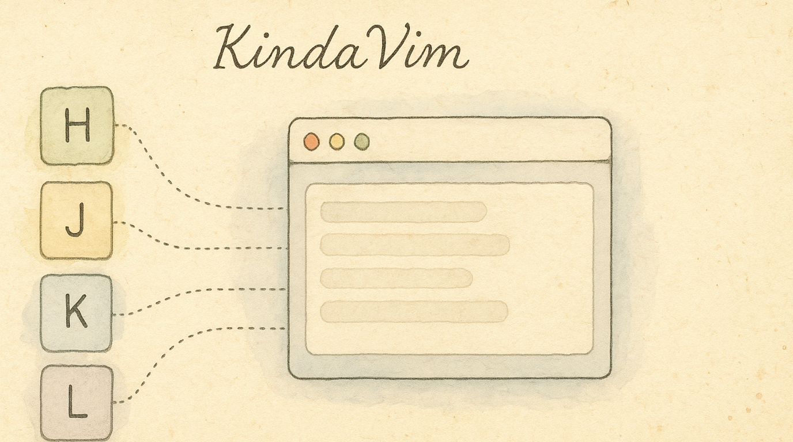

Most vim emulators stop at hjkl arrows. KindaVim ↗ — a separate macOS app by godbout ↗ — gives you the real thing: Normal mode, Visual mode, operators, motions, and text objects across every text field on your Mac. KeyPath complements it with a live overlay, mode badge, and progress insights. The two apps coordinate; neither replaces the other.
New to keyboard customization? Read Keyboard Concepts first for background on layers and dual-role keys.
KindaVim is a third-party macOS app that adds genuine Vim modes to almost every text field on your Mac — Mail, Notes, Slack, your browser's address bar, code editors, and more:
d3w, ct., yap parse exactly like Vimci", da(, vis for inner sentence, etc.Press Esc (or whatever you've configured — fj is a popular choice) to enter Normal mode; press i / a / o to return to Insert. Just like real Vim.
The KindaVim pack in KeyPath is "visual-only" — it adds no keyboard remappings. KindaVim itself handles every keypress. KeyPath layers on:
| What | Where |
|---|---|
| Mode badge | A small VIM: NORMAL / INSERT / VISUAL indicator in the live keyboard overlay header. |
| hjkl arrow hints | When KindaVim is in Normal mode, the live keyboard overlay highlights h / j / k / l with loud arrow glyphs and dims the rest. |
| Operator-pending callout | Press an operator (d, c, y) and the overlay tells you "Press d again for the whole line." A 5× count badge appears while you're typing a numeric prefix. |
| Strategy awareness | KindaVim runs on one of two backends per app — Accessibility (full set) or Keyboard (degraded fallback for apps like Slack). KeyPath reads which is active for your frontmost app and only shows hints that will actually fire. |
| Mastery insights | If you opt into local-only telemetry, the Pack Detail panel shows a 30-day arrow-key reliance chart, your most-used commands with mastery tiers, and stage-appropriate suggestions ("you've never used b — pairs with w you already know"). |
Download KindaVim from kindavim.app ↗. KeyPath's KindaVim pack detects whether the app is installed and shows a status row in Pack Detail.
Open the Gallery in KeyPath, find the KindaVim Mode Display pack, and turn it on. The pack:
If kindaVim.app isn't installed, KeyPath surfaces an alert with a Get KindaVim → button before letting you enable the pack.
Pack Detail has a Record local KindaVim usage stats toggle. When on, KeyPath records aggregate counts (how often you press each key, time spent in each mode, etc.) and surfaces a "Your vim vocabulary" panel with charts and suggestions.
The data stays on your Mac and is never sent anywhere. A Clear all KindaVim usage data button in the same panel deletes it at any time.
When KindaVim is in Normal mode and the pack is on, KeyPath transforms the overlay:
h j k l render as large accent-coloured arrow glyphs (◀ ▼ ▲ ▶), the loudest signal on the keyboard.w b e, 0 $, i a o, x, d c y, f t, gg G, etc.) get small chips in the top-right corner of their keycap.Screenshot — KeyPath overlay in KindaVim Normal mode:
┌─ KeyPath ──────────────────────── VIM: NORMAL ─── ● ──┐
│ │
│ ┌───┐┌───┐┌───┐┌───┐┌───┐┌───┐┌───┐┌───┐┌───┐┌───┐ │
│ │ q ││ w ││ e ││ r ││ t ││ y ││ u ││ i ││ o ││ p │ │
│ │ ││ w ││ e ││ ││ t ││ y ││ u ││ i ││ o ││ p │ │
│ └───┘└───┘└───┘└───┘└───┘└───┘└───┘└───┘└───┘└───┘ │
│ ┌───┐┌───┐┌───┐┌───┐┌───┐┌═══╗┌═══╗┌═══╗┌═══╗┌───┐ │
│ │ a ││ s ││ d ││ f ││ g │║ ◀ ║║ ▼ ║║ ▲ ║║ ▶ ║│ ; │ │
│ │ ││ ││ d ││ f ││ g │║ h ║║ j ║║ k ║║ l ║│ │ │
│ └───┘└───┘└───┘└───┘└───┘╚═══╝╚═══╝╚═══╝╚═══╝└───┘ │
│ ┌───┐┌───┐┌───┐┌───┐┌───┐┌───┐┌───┐┌───┐┌───┐ │
│ │ z ││ x ││ c ││ v ││ b ││ n ││ m ││ ││ │ │
│ │ ││ x ││ c ││ ││ b ││ ││ ││ ││ │ │
│ └───┘└───┘└───┘└───┘└───┘└───┘└───┘└───┘└───┘ │
└────────────────────────────────────────────────────────┘
═══ hjkl arrows (accent color) d/f/g = operators
w/e/b = word motions x/c = delete/changeThe overlay vanishes back to its normal state the instant KindaVim flips to Insert mode.